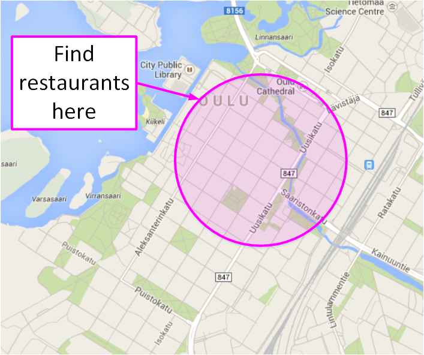

FIWARE - POI Data Provider
POI Data Provider generally
- A POI data provider stores and provides information based on location
- Searches based on area e.g. circle or bounding box.
- Filtering of results using other data values e.g. category or tags

FIWARE - POI Data Provider
FIWARE POI (Points of interest) Generic Enabler is a web server kit that supports
- storing information related to locations
- serving queries by location and other criteria
- can be configured to meet your data needs
FIWARE POI Generic Enabler makes it relatively easy to
- Relate any information to places, e.g.
- Tourist attractions / services
- Photos, videos, 3D content
- Special location data of your business
- Imaginary items of an outdoor game
- ...
- Search information by location and other criteria
- Store information by location
- Develop an application that utilizes those capabilities
Specially FIWARE POI Generic Enabler allows you to
- combine your own data with public POI data
- speed up mobile operation by fetching only the data your application needs
- define and use own data structures, if need for extra flexibility
- distribute your service and data to several separately managed servers
- store texts and links in several languages
API Documentation
Software Downloads
Other documentation
Questions & Answers
Use tag "fiware-poi" in stackoverflow.
Legal
Software associated to the POI Data Provider Generic Enabler product is provided as open source under Apache License 2.0.